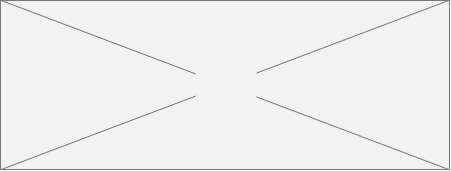

浏览
< 2/9 >

提交
答题
完形填空
阅读下面短文，掌握大意，从ACBD四个选项中选出最佳选项。
（ ）1. A. travel |B. country |C. language |D. people
（ ）2. A. unless B. if C. although D. so
（ ）3. A. knowledge B. language C. speech D. words
（ ）4. A. usual B. easy C. difficult D. interesting
（ ）5. A. after B. before C. for D. at
（ ）6. A. difficult B. strange C. wonderful D. important
（ ）7. A. why B. who C. how D. when
（ ）8. A. necessary B. unimportant C. useless D. funny
（ ）9. A. hearing B. knowing C. saving D. reading
（ ）10. A. recognize B. find C. understand D. believe
（ ）11. A. family B. country C. city D. village
（ ）12. A. where B. which C. that D. it
（ ）13. A. find B. look for C. select D. know
（ ）14. A. therefore B. however C. but D. althoug
（ ）15. A. look at B. see C. know D. reach
（ ）16. A. use B. speaking C. writing D. learning
（ ）17. A. mind B. head C. heart D. matter
（ ）18. A. from B. in C. at D. to
（ ）19. A. much B. indeed C. also D. finally
（ ）20. A. language B. position C. size D. citizen
It is always interesting to visit another country, especially for those who have never traveled abroad. Foreign ___1___ can be educational for anyone ___2___ he is interested enough to make preparations beforehand. Learning the ___3___ of a new country would be ___4___ for the traveler, but the benefits(好处) of such an effort would become clear at once ___5___ his arrival. It may not seem ___6___ to him when he comfortably stays at home, but knowing ___7___ to order a meal or rent a room is ___8___ for the newcomer in a strange place. Without ___9___ the language, it is very difficult for the stranger to ___10___ the people of the new ___11___ and their customs. Of course, in our small world, ___12___ is often possible to ___13___ someone who understands our own language, ___14___ but this is only second-best for the traveler. To be sure, he can ___15___ places and things without the ___16___ of a language, but places and things are not the ___17___ of any country. To get the greatest benefit ___18___ a trip to another country, it is ___19___ important for the visitor to have an understanding of the ___20___.

键盘
( )1. A. Sally B. Jack C. Frank D. Smith
( )2. A. am B. is C. are D. be
( )3. A. key B. pen C. phone D. friend
( )4. A. class B. number C. color D. name
( )5. A. it B. this C. that D. they
( )6. A. white B. green C. yellow D. purple
( )7. A. It B. He C. She D. His
( )8. A. middle B. first C. last D. English
( )9. A. two B. three C. four D. five
( )10. A. to B. too C. and D. but
完形填空题型 现有问题
目前完形填空题型以客观填空题的方式处理，存在以下几个问题。
问题1：题目较长时，做题时需要反复上下滑动，体验非常不好
对于初中的完形填空来说，通常文章比较短，只有10个空。按照现有的方式实现问题不大。
但是对于高中的完形填空题来说，文章通常比较长，而且有20个空。做题时需要反复上下滑动，体验非常不好。
（老师单批查看学生回答时，因为横线中填的是学生回答，正确答案显示在最下方，页面更长，体验更加差）
问题2：做题时出现英文键盘，体验不够好
目前点击空时，会升起英文键盘。使得可以显示内容的区域更加少。而且可能会出现输入a，但是正确答案为A的情况。
问题3：做题前和做题后，因为横线长度不一致，导致笔迹错位
在学生做题前，横线显示默认长度。当把学生填入回答之后，横线通常会变短。导致学生做题时的笔记发生错位。
问题4：添加题目时ABCD选项很难纵向对齐，排版很丑
在PC后台输入选项时，通常会敲打空格，ABCD在纵向上是对齐的。但是即便因为各种原因，很难对齐，而且在客户端因为屏幕尺寸，甚至会出现内容过多自动换行的情况（如右图）。
（实际上区分ABCD选项，也是为了以后导出打印排版做准备）
故决定增加完形填空题型，以提升整体做题/校对体验。